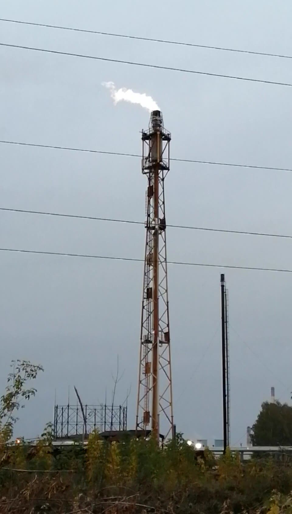

Reuters: da fine ottobre colpite raffinerie per il 30% della capacità russa
Il 30% è capacità nominale degli impianti colpiti, non petrolio in meno: per ora il conto non è arrivato al distributore.
Redazione Contrappunto · aggiornato il 10.11.2026


Le raffinerie sono gli impianti che trasformano il petrolio greggio in benzina, gasolio e cherosene. Da mesi l'Ucraina le colpisce con i droni per togliere carburante e soldi alla Russia che la invade. Il 10 novembre 2026 l'agenzia Reuters, citando due fonti del settore, ha calcolato che gli attacchi ripresi da fine ottobre hanno ridotto di circa il 30% la capacità di raffinazione russa; la notizia circola nelle testate ucraine. Se ne parla anche in Europa perché il gasolio che paghiamo dipende dal mercato mondiale, su cui la Russia pesa. Il 30 ottobre e il 6 novembre ne abbiamo già scritto: qui guardiamo il calcolo e i prezzi di questi giorni.
Vedi di più: 4 parole spiegate, cosa si racconta
Cosa si raccontaKyiv Independent e Ukrinform (agenzia di Stato ucraina) riprendono Reuters: nove delle 35 maggiori raffinerie russe fermate o in emergenza in una settimana, e per Mosca diventa più difficile coprire la mancanza di carburante in casa. Il Moscow Times, testata russa indipendente in esilio, conferma l'attacco di lunedì 9 a Kirishi e i limiti di benzina imposti da Rosneft. Il governo russo, nel comunicato letto, parla di mercato dei carburanti stabile e non cita i droni. [The Kyiv Independent] [Ukrinform] [The Moscow Times] [TASS]
- Capacità nominale
- Quanto un impianto può lavorare al giorno se funziona a pieno regime. Non è il petrolio che oggi manca: un impianto colpito può lavorare a metà, o ripartire in giorni.
- Tonnellate al giorno
- L'unità del calcolo di Reuters: 300 mila tonnellate al giorno sono circa 2,2 milioni di barili.
- Brent
- Il petrolio di riferimento in Europa, quotato in dollari al barile: da cui dipende, con qualche settimana di ritardo, il prezzo del gasolio.
- MASE ed EIA
- Il MASE è il ministero dell'Ambiente e della sicurezza energetica, che pubblica ogni settimana i prezzi medi dei carburanti in Italia. L'EIA è l'ente statistico del governo americano per l'energia: pubblica Brent e gasolio negli Stati Uniti.
- Reuters, citata da Kyiv Independent e Ukrinform: nove delle 35 maggiori raffinerie russe colpite in una settimana, per circa 300 mila tonnellate al giorno di capacità, il 30% del totale.
- Il calo effettivo della lavorazione stimato da Reuters è di circa 200 mila tonnellate al giorno, non 300 mila.
- Dal 26 ottobre il Brent scende da 128 a 107 dollari (EIA) e il gasolio italiano cala di 2,8 centesimi al litro (MASE): un aumento dei prezzi non si vede.
Kyiv Independent e Ukrinform riprendono Reuters: le raffinerie colpite valgono circa il 30% della capacità russa. Ma è capacità nominale: il calo reale stimato è di 200 mila tonnellate al giorno su 930 mila, circa un quinto (nostro calcolo). Il Moscow Times conferma Kirishi e i limiti di benzina di Rosneft; il governo russo parla di mercato stabile, senza citare i droni. Non appoggiamo questi raid: se alzano il prezzo dell'energia, lo paghiamo anche noi che finanziamo Kiev. Ma i dati di questi giorni non lo mostrano: Brent in calo, gasolio italiano a 2,22 euro. Se i prezzi salissero, Roma e Bruxelles dovrebbero chiedere a Kiev di fermarsi. [1] [2] [3] [4] [5] [7]
La verifica punto per punto4 passaggi, 7 fonti
Qui sotto ogni cosa scritta sopra, una per una, con le fonti. Confermato: lo dice un documento originale o più fonti lette. Plausibile: lo riportano fonti serie, ma non abbiamo letto l'originale. Discordante: le fonti danno numeri diversi, e diciamo quali. Ipotesi e Opinione sono il nostro ragionamento, separato dai fatti.
Il calcolo di Reuters: capacità colpita e calo reale
Per Reuters, che cita due fonti del settore (Kyiv Independent, Ukrinform), nell'ultima settimana i raid hanno fermato o messo in emergenza nove delle 35 maggiori raffinerie russe, con una capacità giornaliera di circa 300 mila tonnellate su un totale di circa 930 mila: il 30%. Il calo effettivo della lavorazione potrebbe arrivare a 200 mila tonnellate al giorno, cioè circa il 22% del totale (nostro calcolo). Le due testate non leggono allo stesso modo le 700 mila tonnellate: Ukrinform le dà come lavorazione di fine ottobre, il Kyiv Independent come livello dopo il calo. Tra gli impianti: Ryazan, Yaroslavl, la regione del Volga e Kirishi (Ukrinform). Non abbiamo letto Reuters.
Cosa dicono Mosca e i russi indipendenti
Il 9 novembre il governatore della regione di Leningrado, Alexander Drozdenko, ha detto che droni ucraini hanno preso di mira l'area industriale di Kirishi, dove c'è la seconda raffineria russa, senza riferire danni; i detriti di un drone hanno ucciso una donna a Vsevolozhsk (Moscow Times). Per il Moscow Times la raffineria ha preso fuoco; il Kyiv Independent riporta lo stesso incendio citando il governatore. Il ministero della Difesa russo dice di aver intercettato 430 droni. Rosneft limita di nuovo la benzina a 30 litri in città e 50 in autostrada, e il prezzo medio della benzina è salito del 16% da inizio anno, a 98 rubli al litro al 2 novembre (Moscow Times, 9 novembre). Il 6 novembre il vicepremier Alexander Novak ha detto, in una riunione di governo sul settore dei carburanti: «Ensuring the stability of the domestic fuel market remains an absolute priority», cioè la stabilità del mercato interno è una priorità assoluta; il governo cita importazioni, carburante fuori specifica e nuovi impianti (TASS). Il comunicato non nomina i droni.
I prezzi di questi giorni
Il Brent spot (EIA) era a 128,12 dollari il 26 ottobre, 120,15 il 30 e 107,03 il 3 novembre, ultimo dato pubblicato. Il gasolio auto in Italia (MASE) era a 2.246,71 euro ogni mille litri il 26 ottobre, 2.238,42 il 2 novembre e 2.218,39 il 9: 28 euro in meno, 2,8 centesimi al litro. Negli Stati Uniti il diesel (EIA) è a 6,352 dollari al gallone il 26 ottobre, 6,292 il 2 novembre, 6,127 il 9. Il Kyiv Independent dice i raid ripresi da fine ottobre. Le cifre non dicono perché i prezzi scendano e non scorporano le variazioni delle accise nel periodo.
Non appoggiamo i raid sulle raffinerie: se tolgono carburante al mercato mondiale lo paghiamo anche noi europei, che finanziamo Kiev. Ma questi dati non lo mostrano: da quando i raid sono ripresi, Brent e gasolio scendono, e non scriviamo il contrario. Né provano che i raid non contino: in dieci giorni un effetto si può perdere in mezzo ad altri. Se i prezzi salissero, l'Europa dovrebbe chiedere a Kiev di fermarsi e intanto il governo dovrebbe tagliare le tasse sul gasolio in modo stabile.
Fonti7, tutte con il link
- The Kyiv Independent news desk, Ukrainian strikes cut Russia's oil refining capacity by 30%, Reuters reports (10 novembre 2026) (The Kyiv Independent) · consultata il 10.11.2026
- Russian oil refining capacity cut by about one-third following Ukrainian strikes – Reuters (10 novembre 2026) (Ukrinform) · consultata il 10.11.2026
- Ukrainian Drone Attack Kills Woman, Sparks Fire at Leningrad Region Refinery (9 novembre 2026) (The Moscow Times) · consultata il 10.11.2026
- Russia to ensure domestic fuel market stability — Deputy Prime Minister Novak (6 novembre 2026) (TASS) · consultata il 10.11.2026
- Europe Brent Spot Price FOB (dati settimanali, rilascio del 4 novembre 2026) (EIA (U.S. Energy Information Administration)) · consultata il 10.11.2026
- U.S. Retail Prices for Diesel (On-Highway), All Types (rilascio del 10 novembre 2026) (EIA (U.S. Energy Information Administration)) · consultata il 10.11.2026
- Prezzi medi settimanali dei carburanti, serie storica (al 9 novembre 2026) (MASE, Ministero dell'Ambiente e della sicurezza energetica) · consultata il 10.11.2026
Testo preparato con strumenti di intelligenza artificiale e pubblicato senza revisione umana. Come lavoriamo